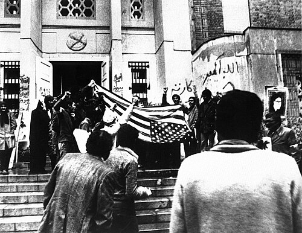
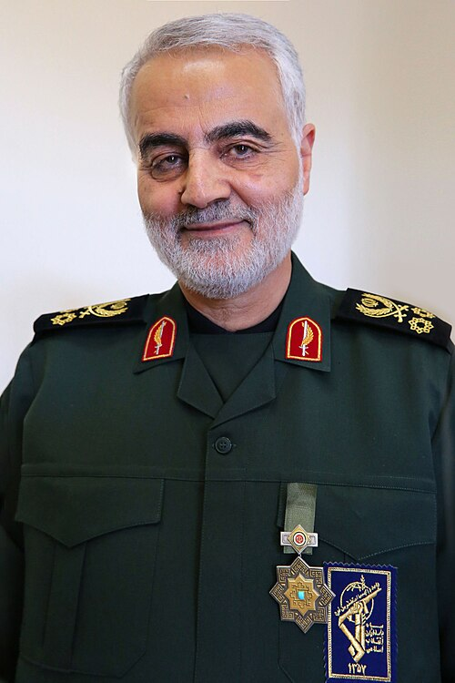

一、盟友时代：巴列维王朝与美国
今天的人们很难想象，美国和伊朗曾经是亲密的盟友。
二战期间，伊朗遭美英苏三国军事占领。冷战开始后，美国将伊朗视为遏制苏联南下的关键棋子。1953年，美国中情局与英国军情六处联手策划政变，推翻了民选首相摩萨台，扶植巴列维国王重新掌权。此后25年，巴列维王朝的内政外交均被美国深度控制，经济遭掠夺，文化被西方渗透。
伊朗成为美国在中东最重要的盟友之一——购买大量美式武器，石油源源不断流向西方。表面的繁荣之下，是日益加深的民族屈辱与贫富分化。
1953年的"阿贾克斯行动"是美国在中东的第一次政变行动，也是美伊关系的"原罪"。60多年后，这段历史仍是伊朗反美叙事的核心论据。
二、革命与决裂：1979

1978年至1979年，宗教领袖霍梅尼领导的伊斯兰革命席卷全国，推翻了巴列维王朝。革命的核心诉求是反独裁、反腐败、反美。
新生的伊斯兰共和国在外交上奉行民族主义和伊斯兰主义，坚决反对美国在中东的霸权。1979年11月，伊朗学生占领美国大使馆，扣留52名人质长达444天，成为两国关系彻底断裂的标志性事件。
1980年4月7日，美国宣布与伊朗断交，正式实施经济制裁——石油禁运、冻结伊朗资产、驱逐在美伊朗人。自此，美伊成为死敌，至今未恢复外交关系。
三、两伊战争：美国的阴影
1980年，伊拉克萨达姆政权入侵伊朗，开启了长达八年的两伊战争。这场战争造成超过100万人死亡。美国在这场战争中扮演了极为复杂的角色——表面中立，实际上向伊拉克提供情报、武器和资金支持，同时秘密向伊朗出售武器（"伊朗门事件"）。
1988年，美国海军巡洋舰"文森尼斯"号击落伊朗航空655号航班，造成290名平民死亡，包括66名儿童。美国至今未就此事正式道歉。
伊朗航空655号事件在伊朗的集体记忆中占据着特殊位置，类似于美国人对9·11的记忆。每年都有纪念活动，提醒伊朗人"美国从来不值得信任"。
四、制裁、核问题与"邪恶轴心"
冷战结束后，美伊关系并未缓和。2001年"9·11"事件后，尽管伊朗实际上在阿富汗问题上与美国有过合作，小布什政府仍将伊朗列为"邪恶轴心"之一，指责其发展大规模杀伤性武器、支持恐怖主义。
伊朗核问题成为双方矛盾的焦点。伊朗坚称其核计划是民用性质，甚至颁布宗教法令禁止发展核武器。但美国和以色列坚持认为伊朗的目标就是核武器，要求其完全弃核。
制裁的代价
持续数十年的严厉经济制裁使伊朗经济接近崩溃。石油生产和出口降到历史最低水平，货币贬值，物价飞涨，民生困苦。制裁的本质是经济战争——不流血，但同样致命。

2015年核协议：昙花一现的希望
2015年，奥巴马政府与伊朗达成具有里程碑意义的《联合全面行动计划》（JCPOA），伊朗同意限制核活动，换取制裁解除。中东看到了和平曙光。
然而，2018年特朗普单方面退出核协议，重新对伊朗实施"极限施压"，包括：
五、不可调和的矛盾
美伊对抗的根源不是单一事件，而是多层次的结构性矛盾：
地缘政治
伊朗是中东强国，从波斯湾到东地中海构建了"什叶派新月地带"。美国视这一势力范围为对其中东霸权的直接挑战。
能源控制
伊朗扼守霍尔木兹海峡——全球五分之一石油运输的必经之路。其盟友也门胡塞武装把守另一条战略要道——红海曼德海峡。美国将确保中东石油安全流入西方世界视为核心利益。
意识形态
伊朗的政教合一体制与美国推崇的自由民主价值观根本对立。伊朗视美国为"大撒旦"，美国视伊朗为"邪恶政权"。
安全观冲突
美以奉行绝对安全观——不能容忍伊朗拥有任何可能威胁其安全的军事能力。伊朗则认为，面对拥有核武器的以色列和全球霸主美国的持续威胁，发展自卫能力是正当权利。
四十多年的对抗塑造了一种几乎不可逆转的敌对格局。革命、人质危机、战争、制裁、暗杀——每一次冲突都在加深仇恨的刻痕。到2023年中东危机全面爆发时，美伊之间的矛盾已如干柴烈火，只差一个火星。